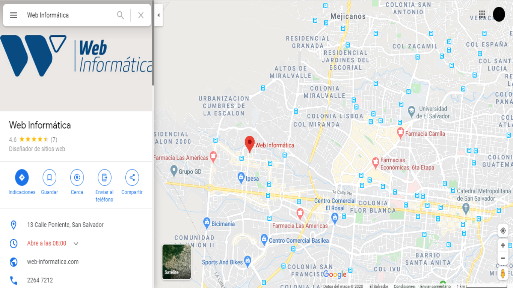

Misión
Ofrecemos una plataforma de creación de páginas web de primer nivel, usada por más de 150 millones de usuarios en 190 países para crear una presencia profesional online, sin importar en qué rubro se desempeñen, tiene algo para todos, ya sea que seas un fotógrafo, músico, emprendedor o estudiante, tenemos todas las herramientas y funciones que necesitas para que tengas una presencia online destacable, absolutamente GRATIS.
Visión
Estamos desarrollando continuamente nuevas herramientas para permitirte tener éxito. Una de ellas es Ascend de Web, creada para darle a nuestros usuarios una solución empresarial integral, para que puedan conectarse con los clientes y automatizar su flujo de trabajo. Con Web Stores, puedes vender tus productos y obtener pagos online
Historia
Web Informatica fue creada por 3 fundadores: Avishai Abrahami, Nadav Abrahami y Giora Kaplan. La idea nació (¡en la playa!) mientras tres amigos construían una página web para desarrollar otro proyecto. Mientras construían una página web como base de otra idea de emprendimiento, el trío de emprendedores se dio cuenta rápidamente que crear su propio sitio web era difícil, frustrante y muy costoso. Esta desagradable experiencia fue la que los llevó a que, en ese instante, comenzara a volar la imaginación y decidieran dar la posibilidad a cualquier persona de crear su propia página web sin necesidad de códigos ni conocimientos de diseño. Mejor aún, decidieron también que sea gratis. En el 2006 nació Web y cambió para siempre la forma en la que las personas crean su presencia Online. Con más de 150 millones de usuarios en alrededor de 190 países, todas las personas tienen total libertad de crear su propia página web. Si te preguntas cuál es la motivación para crear y construir algo gratis, pregúntale a cualquier miembro de nuestro equipo o incluso a cualquiera de sus mascotas y la respuesta siempre será: "Así es como la web siempre debió ser"Nuestra base global de usuarios, SDK libre y posibilidades de diseño sin igual, ofrecen un ecosistema único. Socios, desarrolladores de software, diseñadores web y otros profesionales de la red, pueden publicar sus aplicaciones y servicios a millones de potenciales clientes a través de Web.
Servicios
Sistemas a la Medida
Estándares altos en seguridad web... los sistemas que desarrollamos cuentan con los estándares más altos de la industria en seguridad web y pasan por un proceso que asegura que la experiencia de usuario sea agradable y se ajuste a las necesidades de la empresa.
APPS
Desarrollamos aplicaciones ajustadas a las necesidades de cada empresa... Desarrollamos todo tipo de Aplicaciones corporativas o para emprededores, en centro américa y en Estados Unidos.Nuestros desarrollos son basados en sistema multiplataforma lo que facilita la actualización de ellas.
E-COM MERCE
365 días al año, 24 horas al día... Actualmente, el comercio electrónico se ha convertido en una ventaja competitiva en el mercado facilitando la transacción de negocios los 365 días del año, las 24 horas del día sin tener barreras geográficas que detengan el alcance de tu negocio.
WEB SITES
Fácil administración de contenido... Los sitios web están desarrollados bajo un robusto y probado sistema de código abierto que permite al usuario administrarlo de manera fácil e intuitiva y que tenga la posibilidad de integrarse a otras herramientas web.
Contactenos
Contáctanos en Web Informática al +503 2264 – 7212 y te ayudaremos a saber como crear una pagina web queresponda a las necesidades de tu negocio, será un gusto poder ayudarte en temas de diseñoweb, social media, comercio electrónico, desarrollo a la medida.
